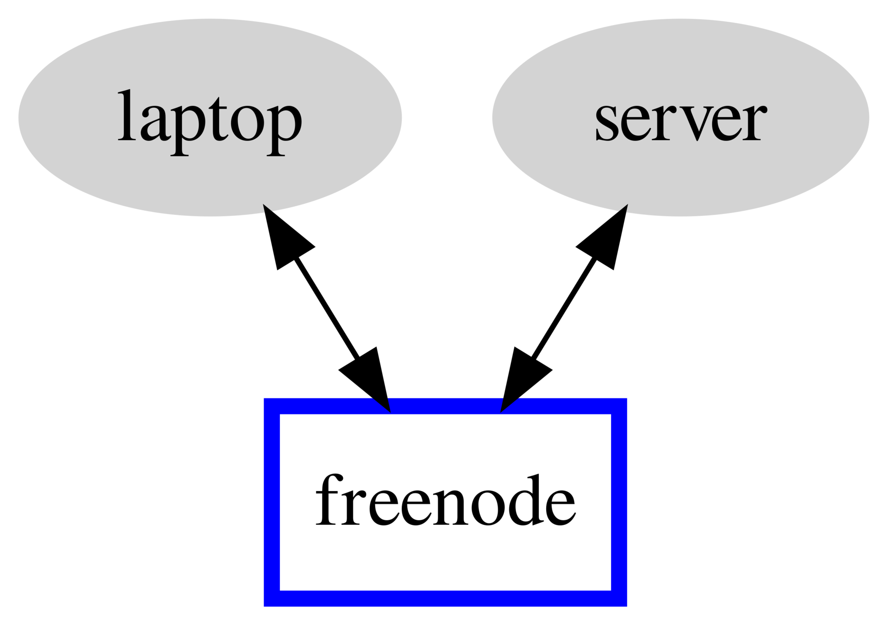

Inexpensive Dynamic DNS over IRC
Building inexpensive dynamic dns infrastructure for sysadmins
The one thing that I’ve been using for longer than ssh is dynamic dns. In this
article I’ll explain how I built an inexpensive, reliable, private alternative
to the mainstream tools commonly available today using only golang and IRC.
Background:
I’ve had an account with dyndns.org for a long time. They used to be free, but
then they cut off the free tier, but left existing accounts alone, until they
eventually cut all the non-payers off entirely. I think we need an inexpensive
way of giving up-and-coming GNU+Linux hackers a way to ssh home, and run their
irssi sessions,
without having to pay. I also wanted something reliable that wouldn’t disappear
the way dyndns did.
I don’t need to broadcast the changing IP on the public DNS infrastructure. For
that, there is ddclient. However, I’ve found that it’s incredibly unreliable,
and when it fails, I’d like to still be able to find that machine so that I or
mgmt can connect to it and fix it.
The design:
I realized that I would need a “third-party” to relay the messages. I’d like that to be something inexpensive that will be around in another 30 years. The only thing that came to mind was IRC! I’ve been using Libera.chat for many years as a way to exchange quality information with other hackers, and I hope it remains available. I decided to use them as my relay. In the horrible chance that they ever disappear, I could easily migrate to a different IRC server since the protocol is open.
|  |
| third-party relay |
{kind=link}
Each “server” which you deploy and setup runs a small systemd service. That service then connects to the IRC server and sits there listening. If a “client” user connects to the channel and sends a “ping” message, then all the listening servers respond with a “pong” message that includes their desired hostname and associated IP address. That client then adds those messages to a local cache to be used for the host resolution that we require!
Code:
The code is available right here.
Usage:
After downloading the code and the dependencies, you simply:
make
sudo make install
sudo systemctl start ircdns
and your service is happily chugging away! Do this on as many machines as you manage. I do this on all of the servers and desktops that I manage.
To setup the client on your laptop, you simply:
make client
sudo make client_install
You’ll then need to add ircdns to the hosts line in /etc/nsswitch.conf.
You should add the entry before the other network backends like dns or mdns
to ensure faster resolution. I haven’t found a simple, elegant, robust way to
automate this step, but feel free to send a patch if you’d like to.
Testing:
Pretty simple to test, it’s all automatic!
$ ping -c 1 -W 1 example.com.ircdns
PING example.com.ircdns (192.0.2.13) 56(84) bytes of data.
--- example.com.ircdns ping statistics ---
1 packets transmitted, 0 received, 100% packet loss, time 0ms
I personally like adding it to my ~/.ssh/config so that I can do even more
magic with SSH. For example:
Host example
Hostname example.ircdns
User root
LocalForward 1443 192.0.2.42:443
DynamicForward 1080
So that I can ssh example with ease! Note that you’ll want to use the
.ircdns suffix to explicitly request hostnames through this IRC service. This
allows regular dns lookups to not get slowed down by the higher latency
IRC-based lookups.
Classic Mode and Logs:
Since everything is happening over IRC, we can actually interact with this manually. This is useful for debugging, and for situations where you just want a single lookup without installing the client code.
 |
| view from inside of my IRC client |
In the above session, you can see that I joined the magic IRC channel and listed
the users with /names. Then, I sent a ping message and saw the responses.
Lastly, I ran /lastlog hostname4 to get a recent history from anything
matching that pattern. This gives me a useful log of the current and previous IP
addresses for that hostname!
Internals:
How does this magic work? On the server-side, it’s fairly easy. I wrote a small
IRC bot. I did it very quickly, and there’s nothing particularly exciting there.
On the client-side it’s more interesting! Your libc has this incredibly old
thing called the name service switch,
and everything basically plugs into that when there’s name resolution to do.
(Astute readers might notice that I’ve conflated “DNS” with “name resolution”, but it’s not accidental and is mostly to keep things easy to understand for others.)
The “name resolution” happens according to the hosts line in /etc/nsswitch.conf.
Mine now looks like this:
$ grep '^hosts:' /etc/nsswitch.conf
hosts: files ircdns dns myhostname
Anytime glibc does name resolution, it checks that line, and then runs all the
various plugins listed there. We now have one more listed. It’s clever enough to
be very fast and return right away so as not to block the entire lookup if the
request doesn’t end in .ircdns. (But this is configurable.)
Building such a plugin in golang required a bit of import "C", but all the
hard trail blazing had already been done by Leo Antunes
for his docker-nss resolver. You just
need to implement the _nss_*_gethostbyname*_r functions and build it with
go build -buildmode=c-shared and some
linker flags.
Performance:
With a cold-cache, a lookup takes about 10 seconds. This might seem like a long
time, but it’s entirely free. As a result you might want to use caching to keep
the most recently used entries fresh. If your workloads are particularly latency
sensitive, then you could run the client as a systemd service to watch for new
messages and to keep the cache warm so that lookups would be almost instant.
This could also spin-up on demand, and shutoff after some calculated period of
time.
There’s also an option to immediately return once the first valid result comes in. This can speed things up a little as well, and is possible because the IRC client streams the results to be processed in real-time.
Security:
Currently, this is running in my own private IRC channel, and I only use it for
ssh, where I already verify host keys before connecting, so security is not a
major priority for me, and I’m not particularly worried about anyone dos-ing
my IRC channel.
However, improvements could be made! Each server could have a public and private key pair, and the public halves could be copied to the client laptop. All their messages could be signed so that the client could automatically ignore any unsigned broadcasts. Similarly, the server could have a public and private key pair, and the public halves could be copied to the server machines. Any “ping” message that is not signed appropriately could be ignored!
(All signed messages should also include a monotonic timestamp to prevent replay attacks!)
This project has been built as a standalone golang binary that embeds all of its configuration. As a result, it would be easy to embed and deploy the necessary key pairs automatically.
Improvements:
Currently we detect the public IP address by polling. I’d like to avoid having to ping an external server (even though it checks a whole list of them to avoid SPOF) and I’d also like to avoid polling. If you know of a robust, event-driven mechanism to replace this, please let me know!
As discussed, improved caching could be a huge benefit if your use-case requires it. More robust cryptographic security could also be added, again, if your use-case requires it. Lastly, an mgmt config module to automatically deploy this would be useful. If you’d like to work on, or sponsor any or all of these, please contact me and let me know.
Custom configuration:
A lot of custom configuration can be changed for your own personalized ircdns
builds. I haven’t fully documented or implemented that, since it’s outside the
scope of what I needed for my use-case. It currently connects to the #ircdns
channel on Libera.chat, but that can be changed. If
you’d like some custom builds and a hand setting this up, please let me know! I
will offer this service for an extremely low price matched to meet your budget.
If you write open source software
that I use, then I will probably do it for free.
Conclusion:
-
Reliable, long-term name resolution relay via IRC protocol. This depends on Libera.chat existing, so please send them a few dollars.
-
Natively integrated with the venerable name service switch so lookups work with your existing tools.
-
Free.
I hope you enjoyed this and found it useful.
Happy Hacking,
James
You can hire James and his team at m9rx corporation.
You can follow James on Mastodon for more frequent updates and other random thoughts.
You can follow James on Twitter for more frequent updates and other random thoughts.
You can support James on GitHub if you'd like to help sustain this kind of content.
You can support James on Patreon if you'd like to help sustain this kind of content.
Thank you
Your comment has been submitted and will be published if it gets approved.
Click here to see the patch you generated.
Comments
Nothing yet.
Post a comment